WHAT IS RECYCLE RED!?
Recycle Red! is a Chinese New Year sustainability initiative by The Bettering Branch, seeking to promote sustainable & eco-conscious habits during Chinese New Year by partnering with Geneco to bring Red Packets Recycling bins to Schools.
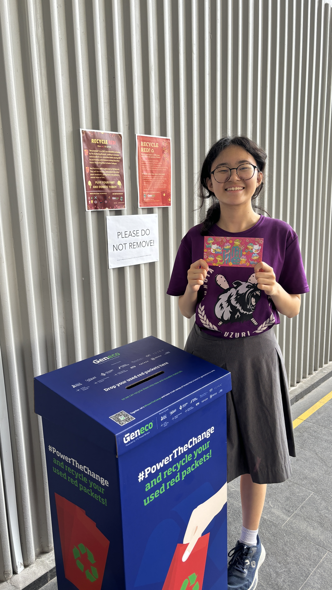
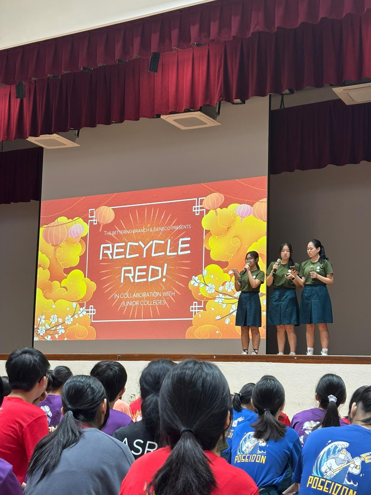
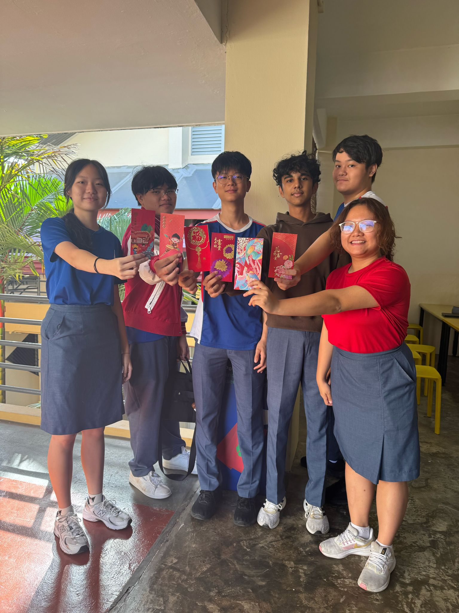
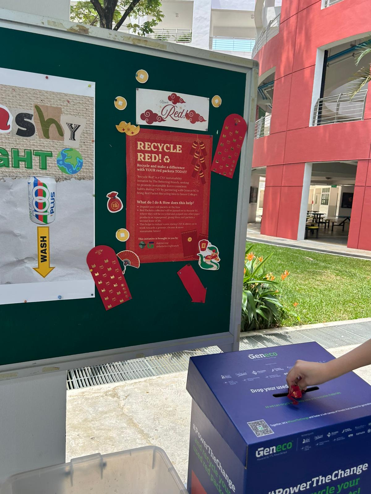
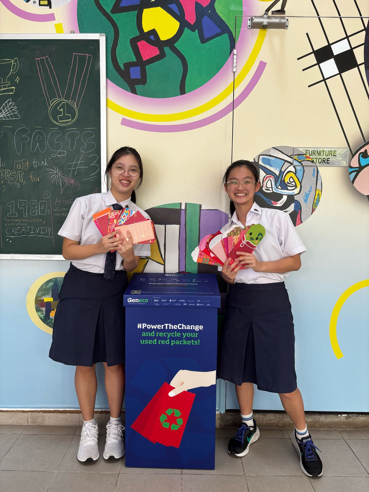
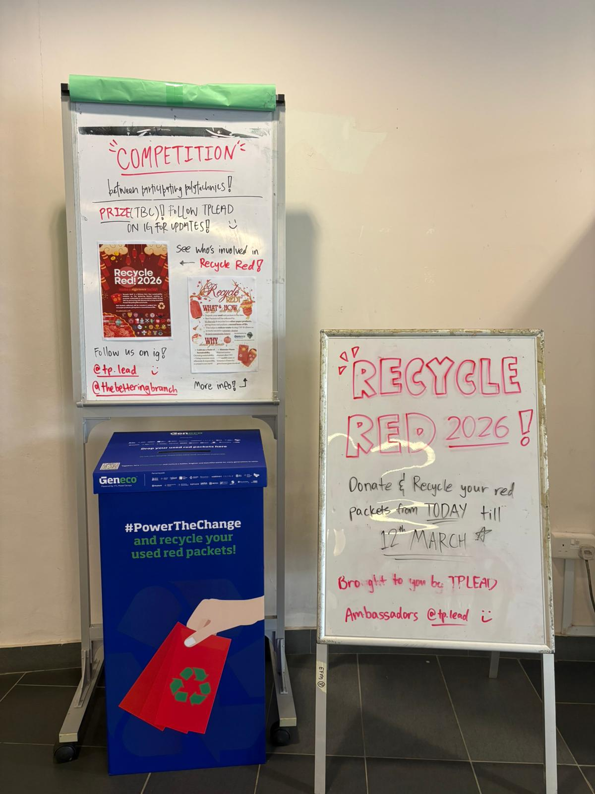
OUR ENVIRONMENTAL IMPACT SO FAR
In 2025, we partnered with 13 Junior Colleges to recycle a total of 435
Kilograms worth of red packets. That's...
- Over 100K red packets (assuming 1 red packet weighs 5-8g)
- About 522kg CO2 Emissions avoided (Using CO2 factor ~1.2kg CO2 per kg recycled paper)
-~3,405 litres of water saved (due to recycled fibres requiring significantly less water per tonne, assuming ~7litres per Kg
Anderson Serangoon Junior College (ASRJC), recycled 80 kilograms worth of red packets
& won the inter-school competition, granting them a visit from the Milo Van!
We thank the Milo Van, Geneco and all our partners for making Recycle Red! 2025 a success!
We'll be back in 2026 when the project's 2nd run has concluded to share more! In the meantime, read more about the initiative
from other sources!
Article by Circular Connection
Article by Marketing Interactive
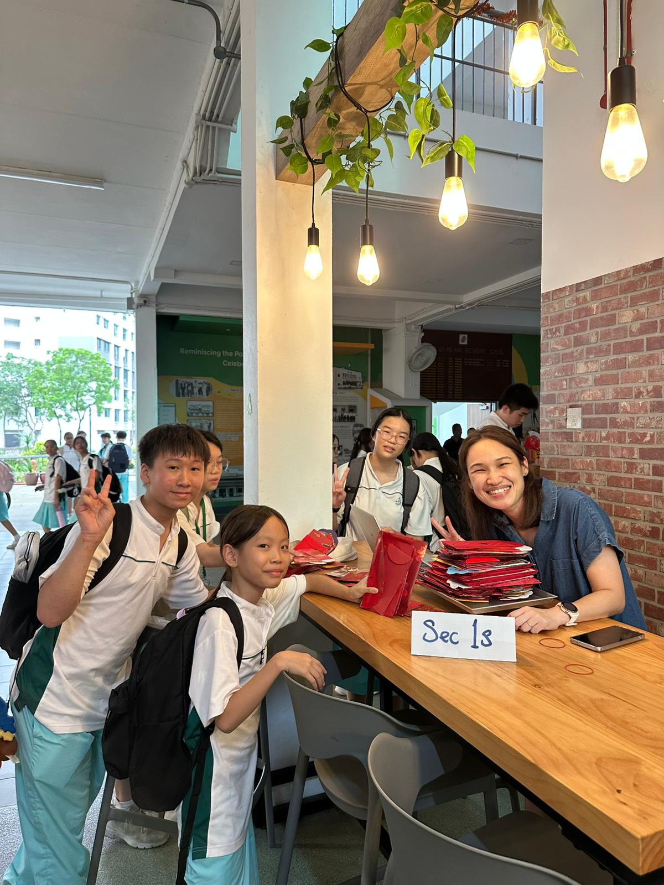
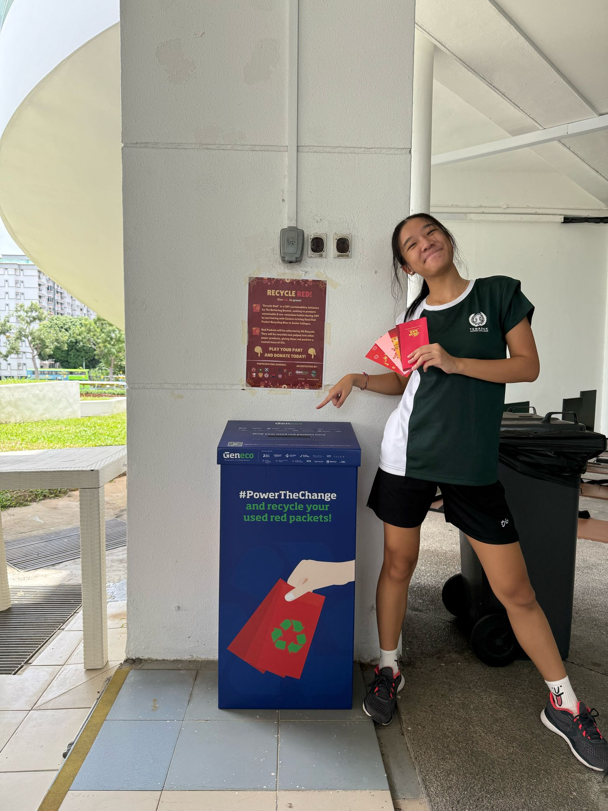
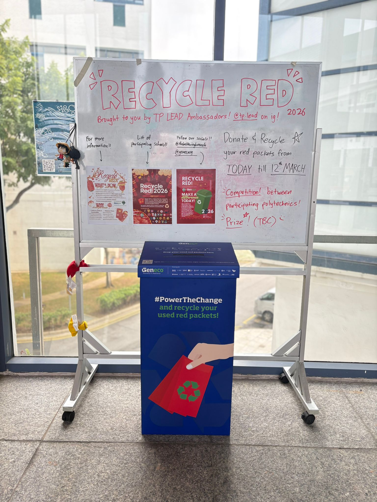
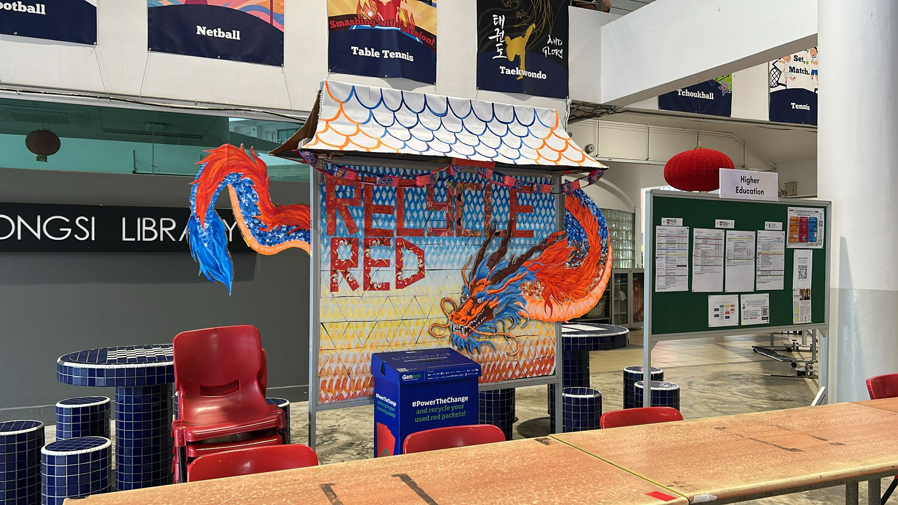
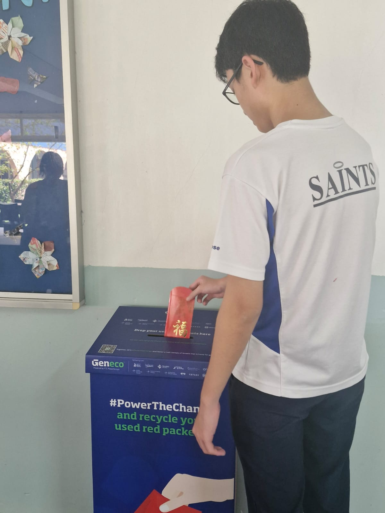
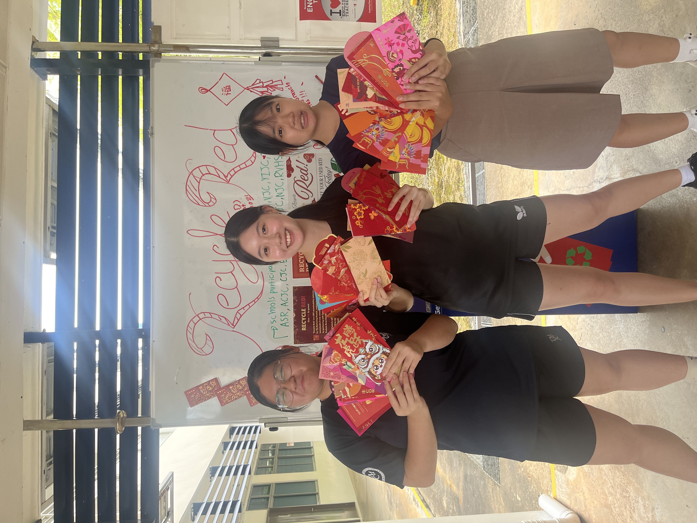
HOW RECYCLE RED! BEGAN
Rooted in the legend of Sui, a demon said to harm sleeping children,
the Chinese New Year (CNY) tradition of giving red packets has always centred youths as its primary recipients.
And so, every CNY, millions of red packets are given to youths all across Singapore.
Not shortly after, when the festivities end, millions of red packets are then also thrown away by youths all across Singapore.
Geneco had already recognised this problem. In 2021, they launched their Used Red Packet Recycling
initiative, placing collection bins across malls in Singapore. But there was a bit of a friction problem. The primary recipients of the red packets, students & youths,
were not only unaware that initiatives like this existed, they were also not willing to go to the trouble of
bringing their red packets to a mall, when tossing them in their bins at home was much easier.
So we (The Bettering Branch) decided to do something about it. We decided to bring the red packets
to where almost all youths go to every single day, rain or shine. School!
In December 2024, we reached out to Geneco to pitch an expansion of their existing initiaive into schools,
& thus Recycle Red! was born.


PROJECT PARTNERS
EXTERNAL

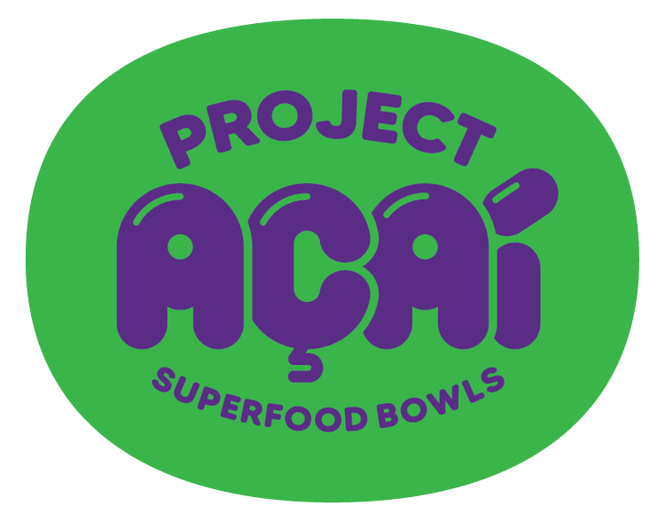

PARTICIPATING SCHOOLS


Frequently Asked Questions
Why can't red packets go into normal recycling bins?
While red packets are made of paper, they cannot be recycled in the blue National Environment Agency (NEA) bins due to deep red dyes, metallic foil & gold stamping that clogs machinery and contaminates paper pulp.
How can I get my school involved?
Reach out to us at thebetteringbranch@gmail.com or via our social media pages. We welcome all and any Junior Colleges, secondary schools, & other educational institutions!
What happens to the red packets after they're collected?
Collected red packets are passed to our recycling partners, SG Recycle, who process collected red packets through a specialised recycling stream designed to handle the metallic foils, dyes, and coatings. This prevents them from ending up in landfills, where paper produces methane as it decomposes & reduces the need for energy-intensive virgin paper pulp production!